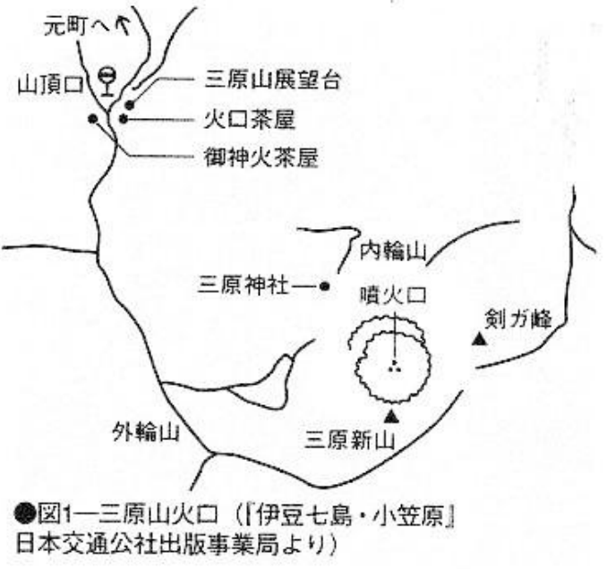

Map 3: Mount Mihara#
Like other suicide spots that became famous, nowadays there may not be many people who would still go to Mount Mihara to commit suicide. However, the volcano has the advantage of swallowing up the corpses forever. The crater forbids human approach, and there is no large-scale search for corpses like in Aokigahara. From this point of view, it still has its uses, so it is introduced here.

History#
How did Mount Mihara on the island of Oshima, one of the Izu Islands, become a suicide spot? Not many people know about it now, and the cause can be traced back to a mysterious Case study 60 years ago. On February 24, 1933, two 21-year-old female students from a women’s vocational school climbed to Mount Mihara. One of them said “regards to everyone” and jumped into the crater, while the other was rescued while hesitating. The two were planning to commit suicide together. This alone was enough to shock the people around them. After investigation, it was found that the female student had climbed Mount Mihara with another friend a month ago on January 9th, which also shocked the friend. She committed suicide and returned. The “death guide” incident caused a sensation in society. For unknown reasons, suiciders, mainly young men and women, flocked to Mount Mihara. Within three months, 32 suicides and 67 attempted suicides occurred, shocking all of Japan.
The real situation is that the girl who became the “death guide” was entrusted by someone to accompany someone to commit suicide a month ago. Then, a month later, someone accidentally confided in her the idea of suicide, so she told them of Mount Mihara. Little did she know that person coerced her to be a guide, so she had no choice but to take her friends to the crater.
As a result, in this year alone, 804 men and 140 women suicided at Mount Mihara, a total of 944. There were even some who jumped in together after meeting for the first time at the top of the mountain. There were some who said to tourists, “Goodbye everyone.” before jumping in. The man jumped down. As a result, Mount Mihara suddenly became a suicide spot.
How to jump in#
From the resting area around the crater, or the souvenir shop at the top of the mountain, walk towards the inner ring of the caldera of Mount Mihara. Around the crater, only the top of the inner ring is off-limits. You cannot peek into the crater. If you want to jump, you can only climb over the fence quickly (see Figure 1). When jumping into a volcano crater, there are many cases where you would end up smashing and getting stuck on a rock shelter halfway, or fall to the bottom of a volcano but not into the magma (Case study 17). However, you can also become comatose due to inhaling toxic volcanic gases, plus the injuries sustained when it rolled and fell, death would occur within a few hours.
Although it is not related to Mount Mihara, a young man followed Osamu Dazai in 1948 and left a suicide note “Take me with you.” and threw himself into Mount Aso. He fell onto a rock 150 meters high, and was finally pulled up. In fact, according to survey data, 240 meters down from Aso Pass, the temperature of the rock is 100 degrees and the temperature of the air is 65.6 degrees.
When jumping down, be careful not to let people on the observation deck on the top of the mountain notice you.
Transportation and accommodation#
There are boats to Oshima from Tokyo, Yokohama, Atami, and Ito, and direct flights from Haneda and Chōfu. If you go to the top of Mount Mihara, you can take a bus or a taxi.
There’s accommodation at the Oshima Hot Spring Hotel in the eighth section of Mount Mihara. There are also large and small hotels in Motomachi and Okada at the port, as well as farmer’s inns. It is not a bad idea to stay for a few days before committing suicide.
Case study 17: Man who climbed up the wall of Mount Mihara caldera#
At about 01:00 pm on December 3, 1956, a young man (29 years old) and a woman (26 years old) jumped from Mount Mihara into a volcano about 60 meters deep. Mount Mihara had a large-scale erruption during January of that year. When the two jumped in, one could still see the new crater caused by the magma eruption.
The rescuers who received the news braved the eruption of unbearable heat and sulfurous gas to rescue him. The woman’s leg was stuck in one of the three places where the lava flames were burning, and she could not move. There was no possibility of rescue. The man was slightly away from the flames, covered in blood and moaning. Since he was still conscious, the rescuers carried the man, whose legs were injured, on their backs, and moved him to a safer place that was more than ten meters above the rocks. By now, it was already late at night, so they turned back to the crater rim, and it was already 03:15.
But when they went to rescue him again early the next morning, the man had already climbed up to the crater shore on his own power and collapsed there. Unable to use his legs at all, he tore his scarf and bandaged his head and hands. He dug two holes in the volcano wall with his hands. He put his knees on the holes and climbed up. He dug two more holes and climbed up. Repeatedly. He completely climbed up the remaining crater wall with an inclination of about 70 degrees, finishing at around 4 o’clock in the morning. It was a 15-hour fight for life. His face was darkened due to blood coagulation, and his left eye was bruised and swollen, but he only suffered minor injuries. The scarf beside him had turned yellow and tattered.
The dead woman was pulled out at about 11 o’clock in the morning. The left thigh and the left shin were burnt to nothing, the stomach was swollen with gas, but the face and hands were unchanged.
The motive for committing suicide was said to be to clean up the triangle relationship that had existed for several years.
Check: this example#
The force of life is amazing. He said afterwards that, when he was left on the rock by the rescue team, “I wanted to jump again, but then the child’s face appeared in front of my eyes, and the belief to live came up.” Such a person should have never attempted suicide in the first place.
It was a rare case to jump off a cliff with a slope of 70 and a depth of 60 meters, but only slightly injured. However, it is extremely rare to jump into a volcano crater and jump directly into the magma. Most of them would hit a rock halfway and tumble to the bottom of the crater, then die from the heat and gas. Enough is said about the horror of volcanic caldera. He described the scene when climbing the volcanic wall: “Due to the fierce heat and the sulfur smoke that was sprayed up, my face was hot and I couldn’t breathe.”
The woman successfully touched the magma and achieved her goal, but her body was horrific.
This story illustrates that when committing suicide in a volcanic crater, the location of the fall and the will to die are both very important.